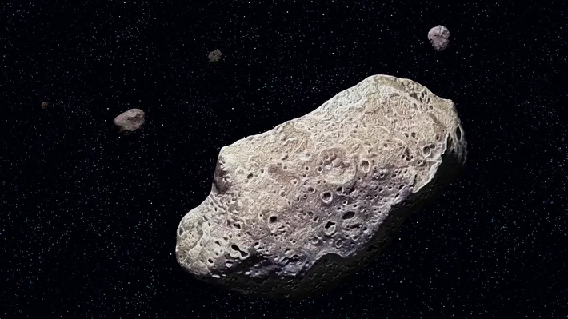

Aestroids and Aestroid belt
Aestroid
An asteroid is a minor planet—an object that is neither a true planet nor an identified comet— that orbits within the inner Solar system. They are rocky, metallic, or icy bodies with no atmosphere, classified as C-type (carbonaceous), M-type (metallic), or S-type (silicaceous). The size and shape of asteroids vary significantly, ranging from small rubble piles under a kilometre across and larger than meteoroids , to Ceres, a dwarf planet almost 1000 km in diameter. A body is classified as a comet, not an asteroid, if it shows a coma (tail) when warmed by solar radiation, although recent observations suggest a continuum between these types of bodies.
Of the roughly one million known asteroids, the greatest number are located between the orbits of Mars and Jupiter, approximately 2 to 4 AUfrom the Sun, in a region known as the main asteroid belt. The total mass of all the asteroids combined is only 3% that of Earth’s moon. The majority of main belt asteroids follow slightly elliptical, stable orbits, revolving in the same direction as the Earth and taking from three to six years to complete a full circuit of the Sun.
Aestroid belt
An asteroid is a minor planet—an object that is neither a true planet nor an identified comet— that orbits within the inner Solar system. They are rocky, metallic, or icy bodies with no atmosphere, classified as C-type (carbonaceous), M-type (metallic), or S-type (silicaceous). The size and shape of asteroids vary significantly, ranging from small rubble piles under a kilometre across and larger than meteoroids , to Ceres, a dwarf planet almost 1000 km in diameter. A body is classified as a comet, not an asteroid, if it shows a coma (tail) when warmed by solar radiation, although recent observations suggest a continuum between these types of bodies.
Of the roughly one million known asteroids, the greatest number are located between the orbits of Mars and Jupiter, approximately 2 to 4 AUfrom the Sun, in a region known as the main asteroid belt. The total mass of all the asteroids combined is only 3% that of Earth’s moon. The majority of main belt asteroids follow slightly elliptical, stable orbits, revolving in the same direction as the Earth and taking from three to six years to complete a full circuit of the Sun.
